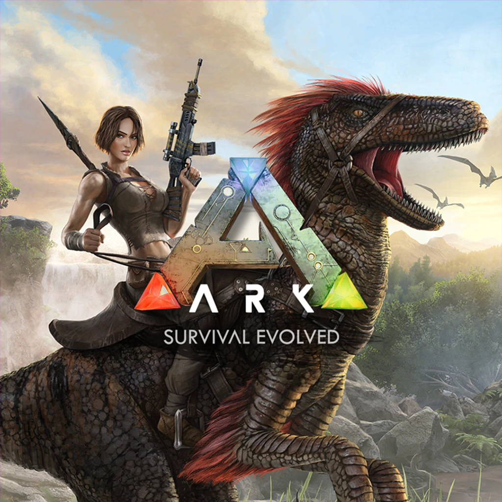

El jugar es uno de mis pasatiempos favoritos, por lo cual le he invertido varias horas a este pasatiempo, en el que tengo un mayor numero de horas es en CSGO
El jugar es uno de mis pasatiempos favoritos, por lo cual le he invertido varias horas a este pasatiempo, en el que tengo un mayor numero de horas es en CSGO>

Ark es mi juego favorito de supervivencia, este se posiciona en el segundo lugar de juegos a los cuales le he invertido horas en este cuento con más de 100h de juego, lastimosamente es un juego que aburre en solitario.>
Apex Legends es actualmente mi juego favorito en el cual llevo por el momento más de 500h las cuales siguen en aumento cada semana, a pesar de ser un juego muy difícil no me cansare de este.
Este juego entra dentro de la categoría Offline ya que solo lo juego en esos momentos donde no cuento con internet y a pesar de ser un juego simple la verdad ,e he enganchado muchísimo por lo cual es de mis favoritos.>